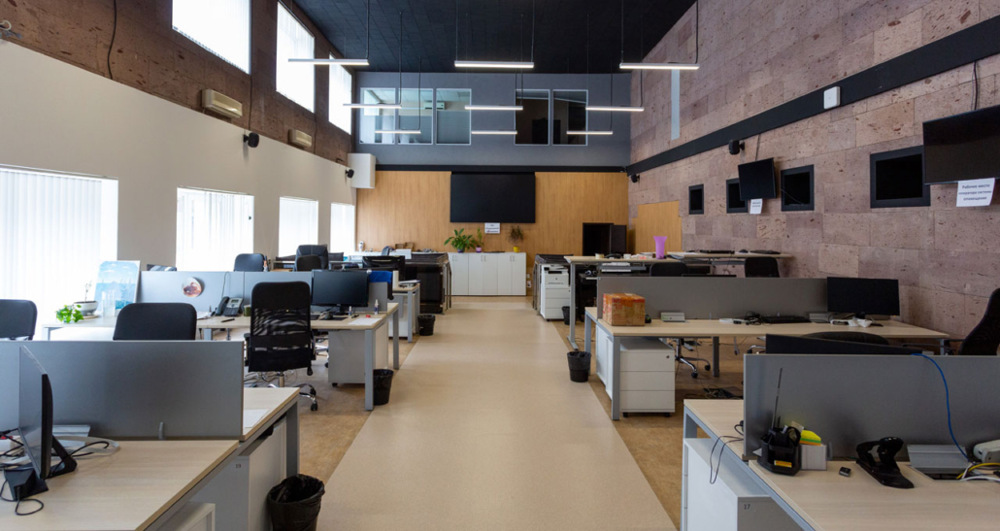

A BC Profiler
A BC Profiler atua com Desenvolvimento Humano Estratégico aplicado a
contextos reais de liderança, negócios e tomada de decisão. Nosso trabalho
parte do comportamento humano como base para resultados sustentáveis,
relações profissionais mais saudáveis e posicionamentos mais consistentes.
Atendemos empresas, lideranças e profissionais conscientes de que a
performance vai além da técnica, sendo sustentada por clareza emocional,
presença, maturidade e alinhamento entre identidade, função e ambiente.
Fale conosco no Whatsapp

A BC Profiler é formada por profissionais especializados em desenvolvimento
humano, comportamento, liderança e performance, com atuação integrada, visão
estratégica e comunicação.
Trabalhamos de forma colaborativa, unindo análise técnica, escuta
qualificada e intervenção prática. Cada projeto é conduzido com
responsabilidade, confidencialidade e foco em resultados reais — respeitando
a individualidade das pessoas e a complexidade dos contextos
organizacionais.
Nosso diferencial está na combinação entre método, experiência e
sensibilidade para lidar com decisões humanas em ambientes de alta
exigência.
Luciane Bandow
Fundadora e diretora, possui trajetória consolidada em educação, desenvolvimento humano, análise comportamental e gestão de pessoas, com mais de duas décadas de atuação na formação, orientação e desenvolvimento de indivíduos, equipes e lideranças. Sua base acadêmica e suas capacitações abrangem Educação, Letras e Linguagens, Gestão de Pessoas, Desenvolvimento Humano e Neurociências, Análise Comportamental (DISC), Análise Vocacional e de Carreiras, Mentoria e Coaching, Programação Neurolinguística (PNL) e Inteligência Emocional, entre outras formações voltadas à leitura do comportamento humano, posicionamento profissional e performance sustentável.
Rodrigo Fernando Cereser
Sócio, traz sólida experiência executiva em gestão comercial, operações e liderança de equipes de alta performance, com atuação superior a 20 anos em ambientes corporativos complexos. Sua formação inclui MBA em Gestão Empresarial pela Fundação Getulio Vargas (FGV), pós-graduações em Gestão de Pessoas e Gestão de Organizações, graduação em Processos Gerenciais e formação em Coaching, além de capacitações executivas voltadas à estratégia, eficiência operacional e cultura de resultados.
A atuação conjunta da direção da BC Profiler permite uma abordagem integrada, que conecta comportamento, decisão, cultura organizacional e performance, assegurando que cada projeto seja conduzido com clareza estratégica, responsabilidade humana e foco em resultados reais.
A BC Profiler oferece soluções estruturadas em Desenvolvimento Humano Estratégico, liderança e cultura organizacional, sustentadas por formação técnica sólida, experiência prática e instrumentos avançados de diagnóstico comportamental e psicossocial.
Nossos serviços são conduzidos diretamente pelos fundadores e profissionais especializados da BC Profiler, combinando análise humana, leitura de contexto organizacional e aplicação prática. Cada entrega parte de diagnóstico preciso, clareza de objetivos e intervenção alinhada à realidade do cliente - seja pessoa física, liderança ou empresa.
Processos individuais ou em grupo voltados ao posicionamento profissional, clareza de decisão, liderança, marca pessoal e construção de autoridade com identidade, segurança e maturidade emocional. As mentorias são estruturadas a partir de avaliações comportamentais, vocacionais e de perfil, garantindo direcionamento personalizado e consistente.
clique aqui e saiba mais
Atuação estruturada junto a empresas para diagnóstico comportamental, análise de clima, alinhamento de cargos e perfis, desenvolvimento de lideranças, fortalecimento da cultura organizacional e gestão da saúde emocional no trabalho. Inclui avaliação de riscos psicossociais e intervenções alinhadas às exigências contemporâneas das organizações.
clique aqui e saiba mais
Capacitações práticas e direcionadas, fundamentadas em diagnóstico prévio, com foco em Comunicação, Comportamento, Inteligência Emocional, Liderança, Power Skills, Gestão de Conflitos, Atendimento ao Cliente e Performance aplicada ao cotidiano das equipes e lideranças.
clique aqui e saiba mais
Palestras estratégicas, reflexivas e provocativas, que abordam comportamento humano, liderança, cultura organizacional, presença profissional e responsabilidade emocional, com linguagem clara, embasamento técnico e conexão direta com a realidade do público.
clique aqui e saiba mais
Aplicação de instrumentos técnicos para autoconhecimento, recrutamento, seleção, desenvolvimento e orientação profissional, incluindo:
-
DISC – Análise Comportamental para identificação de perfil, estilo de comunicação, tomada de decisão e adequação a funções
-
MRP – Mapa de Riscos Psicossociais – Avaliação dos fatores de risco emocional, relacional e organizacional no ambiente de trabalho
-
Avaliações Vocacionais e de Carreira – Direcionamento profissional, alinhamento de perfil, competências e objetivos
-
Mapas de Perfil Profissional e Comportamental – Apoio a lideranças, equipes e processos de gestão de pessoas
clique aqui e saiba mais
Missão
Desenvolver pessoas e organizações para que decisões, relações e
resultados sejam construídos com consciência, responsabilidade e
coerência. Atuamos onde o humano influencia diretamente o desempenho, a
cultura e a longevidade dos negócios.
Visão
Ser referência em desenvolvimento humano aplicado à liderança e à cultura
organizacional, contribuindo para ambientes profissionais mais maduros,
produtivos e sustentáveis — onde líderes ocupam seus espaços com
segurança, identidade própria e autoridade legítima.
Valores
Nossos valores estão ancorados em ética, profundidade, clareza, respeito à
individualidade e compromisso com resultados reais. Acreditamos em método
antes de opinião, em presença antes de discurso e em desenvolvimento que
fortalece sem descaracterizar.
Mais do que desenvolver pessoas, estruturamos decisões, fortalecemos
culturas e apoiamos líderes a ocuparem seus espaços com segurança,
autoridade e coerência.